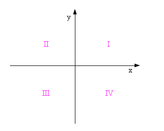

If Else statements#
Download exercises zip#
We can use the conditional command if every time the computer must take a decision according to the value of some condition. If the condition is evaluated as true (that is, the boolean True), then a code block will be executed, otherwise execution will pass to another one.
References:
What to do#
Unzip exercises zip in a folder, you should obtain something like this:
if
if1.ipynb
if1-sol.ipynb
if2-chal.ipynb
jupman.py
WARNING: to correctly visualize the notebook, it MUST be in an unzipped folder !
open Jupyter Notebook from that folder. Two things should open, first a console and then a browser. The browser should show a file list: navigate the list and open the notebook
if1.ipynbGo on reading the exercises file, sometimes you will find paragraphs marked Exercises which will ask to write Python commands in the following cells.
Shortcut keys:
to execute Python code inside a Jupyter cell, press
Control + Enterto execute Python code inside a Jupyter cell AND select next cell, press
Shift + Enterto execute Python code inside a Jupyter cell AND a create a new cell aftwerwards, press
Alt + EnterIf the notebooks look stuck, try to select
Kernel -> Restart
The basic command if else#
Let’s see a small program which takes different decisions according to the value of a variable sweets:
[2]:
sweets = 20
if sweets > 10 :
print('We found...')
print('Many sweets!')
else:
print("Alas there are.. ")
print('few sweets!')
print()
print("Let's find other sweets!")
We found...
Many sweets!
Let's find other sweets!
The condition here is sweets > 10
[3]:
sweets > 10
[3]:
True
WARNING: Right after the condition you must place a colon :
if sweets > 10:
Since in the example above sweets is valued 20, the condition gets evalued to True and so the code block following the if row gets executed.
Let’s try instead to place a small number, like sweets = 5:
[4]:
sweets = 5
if sweets > 10 :
print('We found...')
print('Many sweets!')
else:
print("Alas there are.. ")
print('Few sweets!')
print()
print("Let's find other sweets!")
Alas there are..
Few sweets!
Let's find other sweets!
In this case, the code block after the else: row got executed
WARNING: Careful about block indentation!
As all code blocks in Python, they are preceded by spaces. Usually there are 4 spaces (in some Python projects you can find only 2, but official Python guidelines recommend 4)
else is optional#
It is not mandatory to use else. If we omit it and the condition becomes False, the control directly pass to commands with the same indentation level of if (without errors):
[5]:
sweets = 5
if sweets > 10 :
print('We found...')
print('Many sweets!')
print()
print("Let's find other sweets!")
Let's find other sweets!
QUESTION: Look at the following code fragments, and for each try guessing the result it produces (or if it gives an error):
x = 3 if x > 2 and if x < 4: print('ABBA')
x = 3 if x > 2 and x < 4 print('ABBA')
x = 3 if x > 2 and x < 4: print('ABBA')
x = 2 if x > 1: print(x+1, x):
x = 3 if x > 5 or x: print('ACDC')
x = 7 if x == 7: print('GLAM')
x = 7 if x < 1: print('BIM') else: print('BUM') print('BAM')
x = 30 if x > 8: print('DOH') if x > 10: print('DUFF') if x > 20: print('BURP')
if not True: print('upside down') else: print('down upside')
if False: else: print('ZORB')
if False: pass else: print('ZORB')
if 0: print('Brandy') else: print('Rum')
if False: print('illustrious') else: print('distinguished') else: print('excellent')
if 2 != 2: 'BE' else: 'CAREFUL'
if 2 != 2: print('BE') else: print('CAREFUL')
x = [1,2,3] if 4 in x: x.append(4) else: x.remove(3) print(x)
if 'False': print('WATCH OUT FOR THE STRING!') else: print('CRUEL')
Exercise - no fuel#
You want to do a car trip for which you need at least 30 litres of fuel. Write some code that:
if the
fuelvariable is less than30, prints'Not enough fuel, I must fill up'and incrementsfuelof20litresOtherwise, prints
Enough fuel!In any case, prints at the end
'We depart with 'followed by the final quantity of fuel
Example - given:
fuel = 5
After your code, it must print:
Not enough fuel, I must fill up
We depart with 25 litres
[ ]:
fuel = 5
#fuel = 30
# write here
Show solution
[ ]:
fuel = 5
#fuel = 30
if fuel < 30:
print('Not enough fuel, I must fill up')
fuel += 20
else:
print('Enough fuel!')
print('We depart with', fuel, 'litres')
The command if - elif - else#
By examining the little sweets program we just saw, you may have wondered what it should print when there are no sweets at all. To handle many conditions, we could chain them with the command elif (abbreviation of else if):
[7]:
sweets = 0 # WE PUT ZERO
if sweets > 10:
print('We found...')
print('Many sweets!')
elif sweets > 0:
print("Alas there are.. ")
print('Few sweets!')
else:
print("Too bad!")
print('There are no sweets!')
print()
print("Let's find other sweets!")
Too bad!
There are no sweets!
Let's find other sweets!
EXERCISE: Try changing the values of sweets in the above cell and see what happens
The little program behaves exacly like the previous ones and when no condition is satisfied the last code block after the else is executed:
We can add as many elif as we want, so we could even put a specific elif x == 0: and handle in the else all other cases, even the unforeseen or absurd ones like for example placing a negative number of sweets. Why should we do it? Accidents can always happen, you surely found a good deal of bugged programs in your daily life… (we will see how to better handle these situations in the tutorial “Errors handling and testing”)
[8]:
sweets = -2 # LET'S TRY A NEGATIVE NUMBER
if sweets > 10:
print('We found...')
print('Many sweets!')
elif sweets > 0:
print("Alas there are.. ")
print('Few sweets!')
elif sweets == 0:
print("Too bad! ")
print('There are no sweets!')
else:
print('Something went VERY WRONG! We found', sweets, 'sweets')
print()
print("Let's find other sweets!")
Something went VERY WRONG! We found -2 sweets
Let's find other sweets!
EXERCISE: Try changing the values of sweets in the cell above and see what happens
Questions#
Look at the following code fragments, and for each try guessing the result it produces (or if it gives an error):
y = 2 if y < 3: print('bingo') elif y <= 2: print('bango')
z = 'q' if not 'quando'.startswith(z): print('BAR') elif not 'spqr'[2] == z: print('WAR') else: print('ZAR')
x = 1 if x < 5: print('SHIPS') elif x < 3: print('RAFTS') else: print('LIFEBOATS')
x = 5 if x < 3: print('GOLD') else if x >= 3: print('SILVER')
if 0: print(0) elif 1: print(1)
Questions - Are they equivalent?#
Look at the following code fragments: each contains two parts, A and B. For each value of the variables they depend on, try guessing whether part A will print exactly the same result printed by code in part B
FIRST think about the answer
THEN try executing with each of the values of suggested variables
Are they equivalent? - strawberries#
Try changing the value of strawberries by removing the comments
strawberries = 5
#strawberries = 2
#strawberries = 10
print('strawberries =', strawberries)
print('A:')
if strawberries > 5:
print("The strawberries are > 5")
elif strawberries > 5:
print("I said the strawberries are > 5!")
else:
print("The strawberries are <= 5")
print('B:')
if strawberries > 5:
print("The strawberries are > 5")
if strawberries > 5:
print("I said the strawberries are > 5!")
if strawberries <= 5:
print("The strawberries are <= 5")
Are they equivalent? - max#
x, y = 3, 5
#x, y = 5, 3
#x, y = 3, 3
print('x =', x)
print('y =', y)
print('A:')
if x > y:
print(x)
else:
print(y)
print('B:')
print(max(x,y))
Are they equivalent? - min#
x, y = 3, 5
#x, y = 5, 3
#x, y = 3, 3
print('x =',x)
print('y =', y)
print('A:')
if x < y:
print(y)
else:
print(x)
print('B:')
print(min(x,y))
Are they equivalent? - big small#
x = 2
#x = 4
#x = 3
print('x =',x)
print('A:')
if x > 3:
print('big')
else:
print('small')
print('B:')
if x < 3:
print('small')
else:
print('big')
Are they equivalent? - Cippirillo#
x = 3
#x = 10
#x = 11
#x = 15
print('x =', x)
print('A:')
if x % 5 == 0:
print('cippirillo')
if x % 3 == 0:
print('cippirillo')
print('B:')
if x % 3 == 0 or x % 5 == 0:
print('cippirillo')
Exercise - farm#
Given a string s, write some code which prints 'BARK!' if the string ends with dog, prints 'CROAK!' if the string ends with 'frog' and prints '???' in all other cases
[ ]:
s = 'bulldog'
#s = 'bullfrog'
#s = 'frogbull'
print(s)
# write here
Show solution
[ ]:
s = 'bulldog'
#s = 'bullfrog'
#s = 'frogbull'
print(s)
if s.endswith('dog'):
print('BAU')
elif s.endswith('frog'):
print('CROAK!')
else:
print('???')
Exercise - accents#
Write some code which prints whether a word ends or not with an accented character.
To determine if a character is accented, use the strings of accents
acuteandgraveYour code must work with any
word
[ ]:
acute = "áéíóú"
grave = "àèìòù"
word = 'urrà' # ends with an accent
#word = 'martello' # does not end with an accent
#word = 'ahó' # ends with an accent
#word = 'però' # ends with an accent
#word = 'capitaneria' # does not end with an accent
#word = 'viceré' # ends with an accent
#word = 'cioè' # ends with an accent
#word = 'chéto' # does not end with an accent
#word = 'Chi dice che la verità è una sòla?' # does not end with an accent
# write here
Show solution
[ ]:
acute = "áéíóú"
grave = "àèìòù"
word = 'urrà' # ends with an accent
#word = 'martello' # does not end with an accent
#word = 'ahó' # ends with an accent
#word = 'però' # ends with an accent
#word = 'capitaneria' # does not end with an accent
#word = 'viceré' # ends with an accent
#word = 'cioè' # ends with an accent
#word = 'chéto' # does not end with an accent
#word = 'Chi dice che la verità è una sòla?' # does not end with an accent
if word[-1] in acute or word[-1] in grave:
print(word,'ends with an accent!')
else:
print(word, 'does not end with an accent')
Exercise - Arcana#
Given an arcana x expressed as a string and a list of majors and minors arcanas, print to which category x belongs. If x does not belong to any category, prints is a Mistery.
[ ]:
x = 'Wheel of Fortune' # The Wheel of Fortune is a Major Arcana
#x = 'The Tower' # major
#x = 'Ace of Swords' # minor
#x = 'Two of Coins' # minor
#x = 'Coding' # mistery
majors = ['Wheel of Fortune','The Chariot', 'The Tower']
minors = ['Ace of Swords', 'Two of Coins', 'Queen of Cups']
# write here
Show solution
[ ]:
x = 'Wheel of Fortune' # The Wheel of Fortune is a Major Arcana
#x = 'The Tower' # major
#x = 'Ace of Swords' # minor
#x = 'Two of Coins' # minor
#x = 'Coding' # mistery
majors = ['Wheel of Fortune','The Chariot', 'The Tower']
minors = ['Ace of Swords', 'Two of Coins', 'Queen of Cups']
if x in majors:
print('The', x, 'is a Major Arcana')
elif x in minors:
print('The', x, 'is a Minor Arcana')
else:
print(x, 'is a Mistery')
Nested ifs#
if commands are blocks so they can be nested as any other block.
Let’s make an example. Suppose you have a point at coordinates x and y and you want to know in which quadrant it lies:

You might write something like this:
[12]:
x,y = 5,9
#x,y = -5,9
#x,y = -5,-9
#x,y = 5,-9
print('x =',x,'y =', y)
if x >= 0:
if y >= 0:
print('first quadrant')
else:
print('fourth quadrant')
else:
if y >= 0:
print('second quadrant')
else:
print('third quadrant')
x = 5 y = 9
first quadrant
EXERCISE: try the various couples of suggested points by removing the comments and convince yourself the code is working as expected.
NOTE: Sometime the nested if can be avoided by writing sequences of elif with boolean expressions which verify two conditions at a time:
[13]:
x,y = 5,9
#x,y = -5,9
#x,y = -5,-9
#x,y = 5,-9
print('x =',x,'y =', y)
if x >= 0 and y >= 0:
print('first quadrant')
elif x >= 0 and y < 0:
print('fourth quadrant')
elif x < 0 and y >= 0:
print('second quadrant')
elif x < 0 and y < 0:
print('third quadrant')
x = 5 y = 9
first quadrant
Exercise - abscissae and ordinates 1#
The code above is not very precise, as doesn’t consider the case of points which lie on axes. In these cases instead of the quadrant number it should print:
‘origin’ when
xandyare equal to0‘ascissae’ when
yis0‘ordinate’ when
xis0
Write down here a modified version of the code with nested ifs which takes into account also these cases, then test it by removing the comments from the various suggested point coordinates.
[ ]:
x,y = 0,0 # origin
#x,y = 0,5 # ordinate
#x,y = 5,0 # abscissa
#x,y = 5,9 # first
#x,y = -5,9 # second
#x,y = -5,-9 # third
#x,y = 5,-9 # fourth
print('x =',x,'y =', y)
# write here
Show solution
[ ]:
x,y = 0,0 # origin
#x,y = 0,5 # ordinate
#x,y = 5,0 # abscissa
#x,y = 5,9 # first
#x,y = -5,9 # second
#x,y = -5,-9 # third
#x,y = 5,-9 # fourth
print('x =',x,'y =', y)
if x == 0 and y == 0:
print('origin')
elif x == 0:
print('ordinate')
elif x > 0:
if y == 0:
print('abscissa')
elif y > 0:
print('first quadrant')
else:
print('fourth quadrant')
else:
if y == 0:
print('abscissa')
elif y > 0:
print('second quadrant')
else:
print('third quadrant')
Esercise - abscissae and ordinates 2#
If we wanted to be even more specific, instead of a generic ‘absissa’ or ‘ordinate’, we might print:
‘abscissa between the first and fourth quadrant’
‘abscissa between the second and third quadrant’
‘ordinate between the first and the second quadrant’
‘ordinate between the third and the fourth quadrant’
Copy the code from the previous exercise, and modify it to also consider such cases.
[ ]:
x,y = 0,0 # origin
#x,y = 0,5 # ordinate between the first and the second quadrant
#x,y = 0,-5 # ordinate between the third and the fourth quadrant
#x,y = 5,0 # abscissa between the first and the fourth quadrant
#x,y = -5,0 # abscissa between the second and the third quadrant
#x,y = 5,9 # first
#x,y = -5,9 # second
#x,y = -5,-9 # third
#x,y = 5,-9 # fourth
print('x =',x,'y =', y)
# write here
Show solution
[ ]:
x,y = 0,0 # origin
#x,y = 0,5 # ordinate between the first and the second quadrant
#x,y = 0,-5 # ordinate between the third and the fourth quadrant
#x,y = 5,0 # abscissa between the first and the fourth quadrant
#x,y = -5,0 # abscissa between the second and the third quadrant
#x,y = 5,9 # first
#x,y = -5,9 # second
#x,y = -5,-9 # third
#x,y = 5,-9 # fourth
print('x =',x,'y =', y)
if x == 0 and y == 0:
print('origin')
elif x == 0:
if y > 0:
print('ordinate between the first and the second quadrant')
else:
print('ordinate between the third and the fourth quadrant')
elif x > 0:
if y == 0:
print('abscissa between the first and the fourth quadrant')
elif y > 0:
print('first quadrant')
else:
print('fourth quadrant')
else:
if y == 0:
print('abscissa between the second and the third quadrant')
elif y > 0:
print('second quadrant')
else:
print('third quadrant')
Exercise - bus#
You must catch the bus, and only have few minutes left. To do the trip:
you need the backpack, otherwise you remain at home
you also need money for the ticket or the transport card or both, otherwise you remain at home.
Write some code which given three variables backpack, money and card, prints what you see in the comments according to the various cases. Once you’re done writing the code, test the results by removing comments from the assignments.
HINT: to keep track of the found objects, try creating a list of strings which holds the objects
[ ]:
backpack, money, card = True, False, True
# I have no money !
# I've found: backpack,card
# I can go !
#backpack, money, card = False, False, True
# I don't have the backpack, I can't go !
#backpack, money, card = True, True, False
# I have no card !
# I've found: backpack,money
# I can go !
#backpack, money, card = True, True, True
# I've found: backpack,money,card
# I can go !
#backpack, money, card = True, False, False
# I have no money !
# I have no card !
# I don't have the card nor the money, I can't go !
# write here
Show solution
[ ]:
backpack, money, card = True, False, True
# I have no money !
# I've found: backpack,card
# I can go !
#backpack, money, card = False, False, True
# I don't have the backpack, I can't go !
#backpack, money, card = True, True, False
# I have no card !
# I've found: backpack,money
# I can go !
#backpack, money, card = True, True, True
# I've found: backpack,money,card
# I can go !
#backpack, money, card = True, False, False
# I have no money !
# I have no card !
# I don't have the card nor the money, I can't go !
found = []
if backpack:
found.append('backpack')
if money:
found.append('money')
else:
print('I have no money !')
if card:
found.append('card')
else:
print('I have no card !')
if money or card:
print("I've found:", ','.join(found))
print('I can go !')
else:
print("I don't have the card nor the money, I can't go !")
else:
print("I don't have the backpack, I can't go !")
Exercise - chronometer#
A chronometer is counting the hours, minutes and seconds since the midnight of a certain day in a string chronometer, in which the numbers of hours, minutes and seconds are separated by colon :
Write some code which prints the day phase according to the number of passed hours:
from 6:00 included to 12:00 excluded: prints
morningfrom 12:00 included to 18:00 excluded: prints
afternoonfrom 18:00 included to 21:00 excluded: prints
eveningfrom 21:00 included to 6:00 excluded: prints
nightUSE
elifwith multiple boolean expressionsYour code MUST work even if the chronometer goes beyond 23:59:59, see examples
HINT: use the modulo operator
%for having hours which only go from 0 to 23
[ ]:
chronometer = '10:23:43' # morning
#chronometer = '12:00:00' # afternoon
#chronometer = '15:56:02' # afternoon
#chronometer = '19:23:27' # evening
#chronometer = '21:45:15' # night
#chronometer = '02:45:15' # night
#chronometer = '27:45:30' # night
#chronometer = '32:28:30' # morning
# write here
Show solution
[ ]:
chronometer = '10:23:43' # morning
#chronometer = '12:00:00' # afternoon
#chronometer = '15:56:02' # afternoon
#chronometer = '19:23:27' # evening
#chronometer = '21:45:15' # night
#chronometer = '02:45:15' # night
#chronometer = '27:45:30' # night
#chronometer = '32:28:30' # morning
hour = int(chronometer.split(':')[0]) % 24
if hour >= 6 and hour < 12:
print('morning')
elif hour >=12 and hour < 18:
print('afternoon')
elif hour >=18 and hour < 21:
print('evening')
else:
print('night')
Questions - Are they equivalent?#
Look at the following code fragments: each contains two parts, A and B. For each value of x, try guessing whether part A will print exactly the same result printed by code in part B
FIRST think about the answer
THEN try executing with each of the suggested values of
x
Are they equivalent? - inside outside 1#
x = 3
#x = 4
#x = 5
print('x =',x)
print('A:')
if x > 3:
if x < 5:
print('inside')
else:
print('outside')
else:
print('outside')
print('B:')
if x > 3 and x < 5:
print('inside')
else:
print('outside')
Are they equivalent? - stars planets#
x = 2
#x = 3
#x = 4
print('x =', x)
print('A:')
if not x > 3:
print('stars')
else:
print('planets')
print('B:')
if x > 3:
print('planets')
else:
print('stars')
Are they equivalent? - green red#
x = 10
#x = 5
#x = 0
print('x =',x)
print('A:')
if x >= 5:
print('green')
if x >= 10:
print('red')
print('B:')
if x >= 10:
if x >= 5:
print('green')
print('red')
Are they equivalent? - circles squares#
x = 4
#x = 3
#x = 2
#x = 1
#x = 0
print('x =', x)
print('A:')
if x > 3:
print('circles')
else:
if x > 1:
print('squares')
else:
print('triangles')
print('B:')
if x <= 1:
print('triangles')
elif x <= 3:
print('squares')
else:
print('circles')
Are they equivalent? - inside outside 2#
x = 7
#x = 0
#x = 15
print('x =', x)
print('A:')
if x > 5:
if x < 10:
print('inside')
else:
print('outside')
else:
print('outside')
print('B:')
if not x > 5 and not x < 10:
print('outside')
else:
print('inside')
Are they equivalent? - Ciabanga#
x = 4
#x = 5
#x = 6
#x = 9
#x = 10
#x = 11
print('x =', x)
print('A:')
if x < 6:
print('Ciabanga!')
else:
if x >= 10:
print('Ciabanga!')
print('B:')
if x <= 5 or not x < 10:
print('Ciabanga!')
Exercise - The maximum#
Write some code which prints the maximum value among the numbers x, y and z
use nested ifs
DO NOT use the function
maxDO NOT create variables named
max(it would violate the V Commandment: you shall never ever redefine system functions)
[ ]:
x,y,z = 1,2,3
#x,y,z = 1,3,2
#x,y,z = 2,1,3
#x,y,z = 2,3,1
#x,y,z = 3,1,2
#x,y,z = 3,2,1
# write here
Show solution
[ ]:
x,y,z = 1,2,3
#x,y,z = 1,3,2
#x,y,z = 2,1,3
#x,y,z = 2,3,1
#x,y,z = 3,1,2
#x,y,z = 3,2,1
if x > y:
if x > z:
print(x)
else:
print(z)
elif y > z:
print(y)
else:
print(z)
Ternary operator#
In some cases, initializing a variable with different values according to a condition may result convenient.
Example:
The discount which is applied to a purchase depends on the purchased quantity. Create a variable discount by setting its value to 0 if the variable expense is less than 100€, or 10% if it is greater.
[19]:
expense = 200
discount = 0
if expense > 100:
discount = 0.1
else:
discount = 0 # not necessary
print("expense:", expense, " discount:", discount)
expense: 200 discount: 0.1
The previous code can be written more concisely like this:
[20]:
expense = 200
discount = 0.1 if expense > 100 else 0
print("expense:", expense, " discount:", discount)
expense: 200 discount: 0.1
The syntax of the ternary operator is:
VARIABLE = VALUE if CONDITION else ANOTHER_VALUE
which means that VARIABLE is initialized to VALUE if CONDITION is True, otherwise it is initialized to OTHER_VALUE
Questions ternary ifs#
QUESTION: Look at the following code fragments, and for each try guessing the result it produces (or if it gives an error):
y = 3 x = 8 if y < 2 else 9 print(x)
y = 1 z = 2 if y < 3
y = 10 z = 2 if y < 3 elif y > 5 9
Exercise - shoes#
Write some code which given the numerical variable shoes, if shoes is less than 10 it gets incremented by 1, otherwise it is decremented by 1
USE ONLY the ternary if
Your code must work for any value of
shoes
Example 1 - given:
shoes = 2
After your code, it must result:
>>> print(shoes)
3
Example 2 - given:
shoes = 16
After your code, it must result:
>>> print(shoes)
15
[ ]:
shoes = 2
#shoes = 16
# write here
Show solution
[ ]:
shoes = 2
#shoes = 16
shoes = shoes + 1 if shoes < 10 else shoes - 1
print('shoes =', shoes)
Exercise - the little train#
Write some code which given 3 strings sa, sb and sc assigns the string CHOO CHOO to variable x if it is possible to compose sa, sb and sc to obtain the writing 'the little train', otherwise assigns the string ':-('
USE a ternay if
your code must work for any triplet of strings
NOTE: we are only interested to know IF it is possible to compose writings like
'the little train', we are NOT interested in which order they will get composedHINT: you are allowed to create a helper list
Example 1 - given:
sa,sb,sc = "little","train","the"
after your code, it must result:
>>> print(x)
CHOO CHOO
Example 2 - given:
sa,sb,sc = "quattro","ni","no"
after your code, it must result:
>>> print(x)
:-(
[ ]:
sa,sb,sc = "little","train","the" # CHOO CHOO
#sa,sb,sc = "little","the","train" # CHOO CHOO
#sa,sb,sc = "a","little","train" # :-(
#sa,sb,sc = "train","no","no" # :-(
# write here
Show solution
[ ]:
sa,sb,sc = "little","train","the" # CHOO CHOO
#sa,sb,sc = "little","the","train" # CHOO CHOO
#sa,sb,sc = "a","little","train" # :-(
#sa,sb,sc = "train","no","no" # :-(
words = [sa,sb,sc]
x = 'CHOO CHOO' if 'the' in words and 'little' in words and 'train' in words else ':-('
print(x)
Continue#
Go on with If Else - Challenges